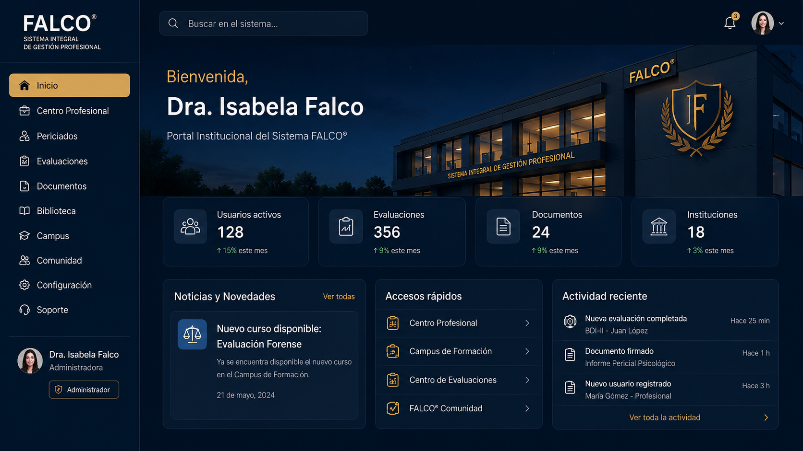
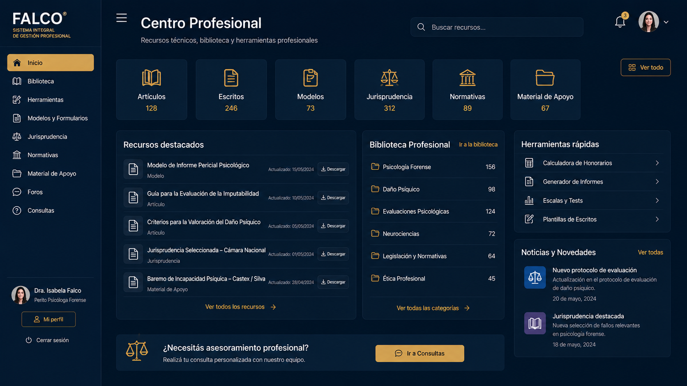
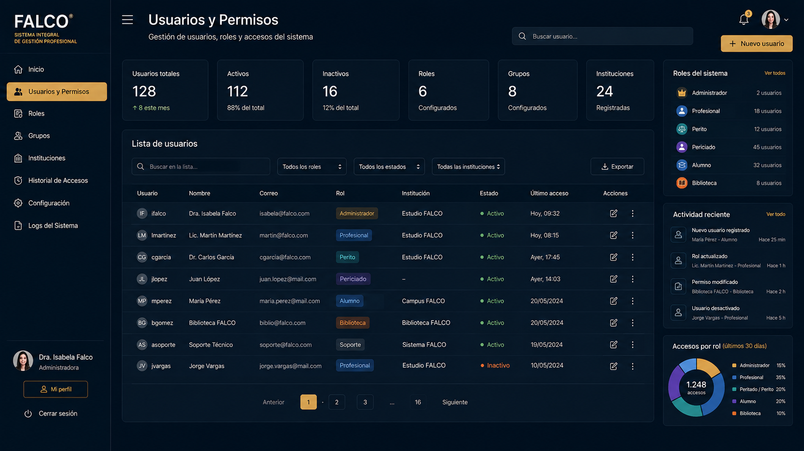
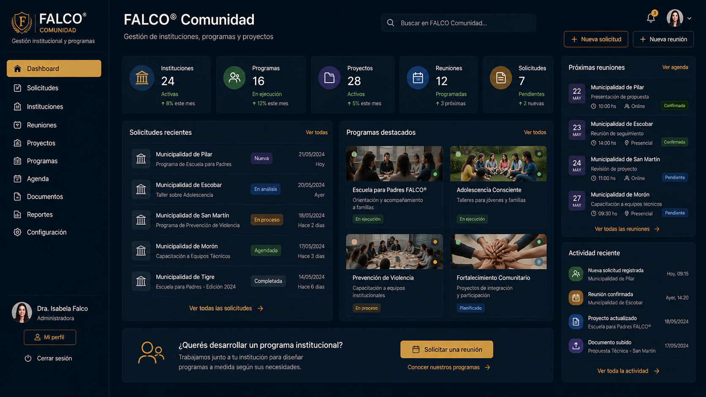
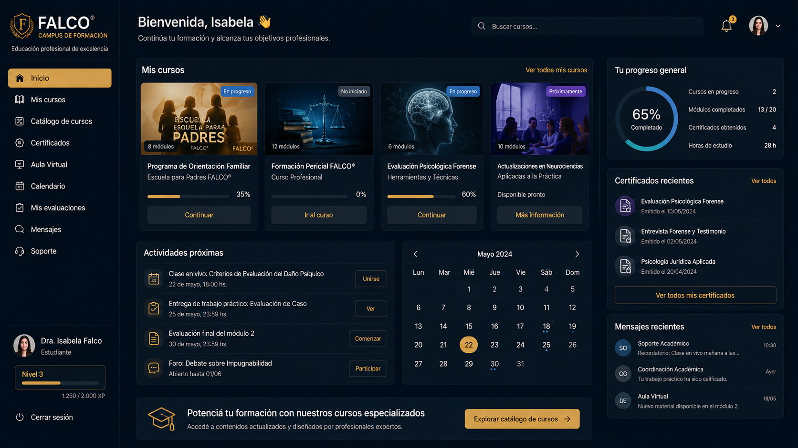
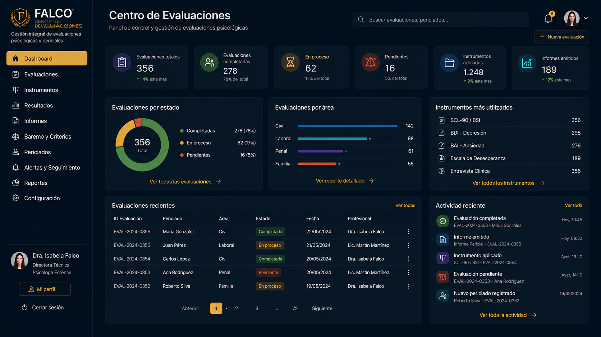

Ingreso seguro
El usuario ingresa con su correo electrónico y contraseña.
Ingrese al Portal Institucional y acceda a las áreas, herramientas y módulos habilitados para su perfil.
El Sistema FALCO® integra evaluación psicológica, gestión pericial, formación, biblioteca, admisión profesional, programas institucionales y herramientas administrativas dentro de una arquitectura centralizada.
El Ecosistema FALCO® funciona como puerta pública. Después de iniciar sesión, cada usuario accede a su Portal Institucional personalizado.
El usuario ingresa con su correo electrónico y contraseña.
El sistema reconoce automáticamente el rol asignado.
Se habilita un panel adaptado a las funciones del usuario.
Cada perfil visualiza únicamente las áreas que puede utilizar.
Una arquitectura institucional creada para centralizar accesos, organizar procesos y acompañar el crecimiento de cada área del Estudio Pericial Psicológico.
Cada usuario ingresa desde una misma puerta institucional y accede al espacio correspondiente a su perfil.
Los módulos se habilitan de acuerdo con la función, las responsabilidades y los permisos de cada usuario.
Profesionales, peritos, periciados y alumnos cuentan con una experiencia adaptada a sus necesidades.
Evaluaciones, documentación, recursos y actividades se mantienen organizados dentro de áreas diferenciadas.
Cursos, encuentros, materiales, biblioteca y certificados forman parte del mismo ecosistema digital.
Admisión, Comunidad, programas, instituciones y proyectos se administran desde una arquitectura común.
La plataforma puede utilizarse desde computadoras, tablets y teléfonos con conexión a internet.
El Sistema FALCO® está preparado para incorporar nuevos servicios, cursos, herramientas y perfiles.
El ecosistema reúne soluciones profesionales, académicas, institucionales y administrativas. El acceso efectivo a cada módulo depende del perfil habilitado.
Recursos técnicos, informes, escritos, herramientas y servicios para psicólogos y peritos.
Conocer el áreaInstrumentos psicológicos, consentimiento, documentación y seguimiento del proceso evaluativo.
Conocer el áreaRegistro de perfiles, postulaciones, antecedentes y documentación profesional.
Conocer el sistemaPropuestas personalizadas para municipios, instituciones, organizaciones y comunidades.
Conocer los programasAcceso central a cursos, recorridos académicos, materiales, progreso y certificación.
Conocer el campusPrograma virtual de ocho encuentros con materiales, actividades y recursos para las familias.
Conocer el programaModelos, escritos, manuales, guías y materiales especializados para la práctica profesional.
Conocer la bibliotecaMarco metodológico propio para la evaluación psicológica y la práctica pericial profesional.
Conocer el métodoRecepción digital de documentación, presentaciones, solicitudes y trámites institucionales.
Conocer el servicioCada módulo fue diseñado para brindar una experiencia específica según el perfil de cada usuario.

Punto de acceso central para todos los perfiles del sistema.

Recursos técnicos, biblioteca y herramientas profesionales.

Administración de usuarios, roles y accesos institucionales.

Gestión de instituciones, programas y proyectos.

Cursos, certificados y actividades académicas.

Instrumentos psicológicos, resultados y documentación.
Los permisos se asignan de acuerdo con la función del usuario dentro del Sistema FALCO®.
Cada usuario visualiza únicamente las herramientas, módulos y recursos habilitados para su perfil dentro del Sistema FALCO®.
Acceso completo al Portal Institucional, administración de usuarios, permisos, contenidos y configuración del sistema.
Centro Profesional, Biblioteca, Campus, Gestión de Periciados y herramientas autorizadas.
Gestión Pericial, evaluaciones, documentación y recursos técnicos.
Instrumentos psicológicos, documentación, seguimiento de su evaluación y comunicaciones.
Campus, Escuela para Padres, certificados y biblioteca del curso.
Acceso exclusivo a los recursos, escritos, modelos y publicaciones.
Cada usuario accede únicamente a las herramientas vinculadas con su función. Los datos, documentos y resultados se mantienen separados conforme a los permisos asignados.
Respuestas a las consultas más habituales sobre usuarios, perfiles, permisos y funcionamiento del Sistema FALCO®.
Pueden ingresar los usuarios previamente habilitados por el Estudio: administradores, profesionales, peritos, periciados, alumnos y usuarios de biblioteca.
El acceso se genera según el servicio, curso, evaluación o área profesional correspondiente. Para solicitarlo, utilice la sección de ayuda o comuníquese con el Estudio.
No. Cada usuario visualiza únicamente los módulos habilitados para su rol y, cuando corresponde, los permisos personalizados asignados por la administración.
La administración del Sistema FALCO® puede asignar roles, habilitar módulos, modificar accesos y desactivar usuarios desde el módulo Usuarios y Permisos.
No. El periciado puede completar los instrumentos y adjuntar documentación, pero no accede a puntajes, resultados, interpretaciones ni informes técnicos.
Verifique el correo y la contraseña. Si el inconveniente continúa, utilice el canal de soporte disponible al final de esta página.
Sí. El Sistema FALCO® está diseñado para funcionar desde computadoras, tablets y teléfonos con conexión a internet.
Sí. Algunos accesos vinculados a evaluaciones pueden configurarse para ser utilizados una única vez, según las condiciones establecidas para cada proceso.
Solicite orientación para acceder a Evaluaciones, Biblioteca, Formación o áreas profesionales.
Solicitar accesoSi ya cuenta con usuario y no puede ingresar, comuníquese para recibir asistencia.
Contactar por WhatsAppAcceda al Portal Institucional, consulte los módulos habilitados para su perfil o solicite asistencia para obtener un usuario.